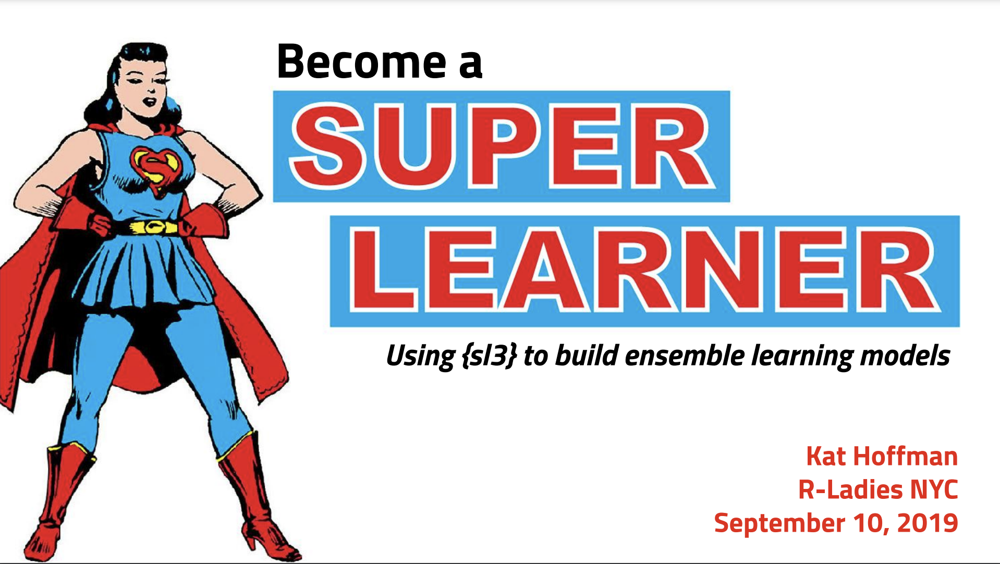

A short and sweet guide to using the R package {sl3} for superlearning. This is part of a tutorial created for an R Ladies NYC Talk in 2019.
 January 10, 2020.
In September 2019, I gave an R-Ladies NYC presentation about using the package sl3 to implement the superlearner algorithm for predictions. You can download the slides for it here. This post is a modification to the original demo I gave.
For a more in-depth background on what the superlearner algorithm is, please see my more recent blog post.
Step 0: Load your libraries, set a seed, and load the data
You’ll likely need to install sl3 from the tlverse github page, as it was not yet on CRAN at the time of writing this post.
The following objects are masked from 'package:stats':
filter, lag
The following objects are masked from 'package:base':
intersect, setdiff, setequal, union
library(gt)
set.seed(7)
We will use the same WASH Benefits data set as the TLverse does in their Hitchhiker’s Guide. We will be predicting children in rural Kenya and Bengladesh’s weight to height z-scores.
Warning in process_data(data, nodes, column_names = column_names, flag = flag, : Character covariates found: tr, fracode, sex, momedu, hfiacat;
Converting these to factors
Warning in process_data(data, nodes, column_names = column_names, flag = flag, :
Missing covariate data detected: imputing covariates.
Note that we can’t have missing data in most statistical learning algorithms, so sl3’s default pre-processing imputes at the median and adds a column for missingness (in case the missingness is informative).
There’s a ton of different aspects of model fitting sl3 has the capabilities to address. For example, we can look into algorithms for when the outcome is binomial, categorical, or continuous. There are also options for when you have clustered data, or if you need to preprocess/screen your data before implementing base learners.
We can learn more about each of these properties on this reference page.
Another aside: looking at available “learners”
We’ll need to pick out base learners for our stack, as well as pick a metalearner. Since we are trying to predict z-scores, a continuous variable, let’s look at our potential learners for a continuous variable.
You’ll notice each learner starts with Lrnr and seems to correspond to a package in R.
Step 3: Choosing the base learners
Let’s pick just a few base learners to match the examples in my slides: a random forest, a generalized boosting model, and a generalized linear model. Let’s keep their default parameters for now.
make_learner_stack() is an easy way to create a stack of default baselearners. It takes the names of the learners as strings and you’re good to go!
There are many models we can choose from but we’ll keep it simple and use a generalized linear model. We are again using the make_learner() function.
metalearner <-make_learner(Lrnr_glm)
Step 5: Make a superlearner object
Remember, under-the-hood Lrnr_sl takes the cross-validated predictions from the base models and uses them to predict the true outcome. That prediction model then is used to fit the predictions from base learners fit on the whole data set.
predict() allows you to see what the model predicts on any given task. Here we look at predictions from the same data we trained the superlearner on, so the predicted weight to height z-scores of the first six children in our data set.
Cross validate your entire ensembled superlearner using the cross-validation package origami, written by the same authors as sl3. Or just hold out a testing data set to evaluate performance.
Use make_learner() to customize the tuning parameters of your base learners or metalearner. Ex: lrnr_RF_200trees <- make_lrnr(Lrnr_randomForest, ntree = 200)
Add many layers to your superlearner and organize it into a “pipeline”
For more demos, check out the following teaching materials from the authors of sl3. My tutorial uses one of their example data sets in case you’d like to extend your learning via their training resources.